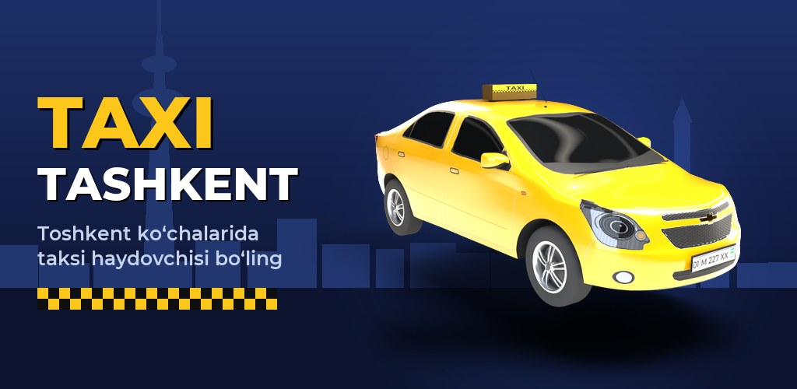

Taxi Tashkent
Toshkent ko‘chalarida taksi simulyatori
Matiz’da ish boshlang, yo‘lovchilarni navigator bilan manzilga yetkazing, pul yig‘ing va yangi mashinalar oling — Toshkentning haqiqiy ko‘chalari, mahallalari va diqqatga sazovor joylari bo‘ylab.
Google Play’dan yuklab olingBepul · Android 8.0+ · tez kunda
Toshkent 1:1
OpenStreetMap asosida qurilgan haqiqiy ko‘chalar, ko‘priklar, metro bekatlari, bozorlar va mahallalar. Shaharni o‘ynab o‘rganing.
Buyurtmalar va navigator
Yandex Go uslubidagi buyurtmalar: yo‘lovchi bir daqiqalik masofada, safar 3–5 daqiqa. Navigator burilishlarni oldindan aytadi.
20+ mashina
Matiz, Nexia, Cobalt, Gentra, Malibu, elektromobillar va premium klassgacha. Har bir klass o‘z tarifida ko‘proq ishlaydi.
Yo‘l qoidalari
Svetoforlar, tezlik kameralari, piyodalar o‘tish joylari va jarimalar — ehtiyotkor haydovchi ko‘proq choy puli va 5 yulduz oladi.
PRAVA imtihoni
Haydovchilik guvohnomasini oling: qoidalarni o‘qing, test savollarini yeching va avtodromda amaliy imtihon topshiring.
Vazifalar va reyting
Kunlik va haftalik vazifalar, 7 kunlik sovg‘a, tadbirlar va haftalik reyting jadvalida boshqa haydovchilar bilan bellashuv.
Kechki Toshkent sizni kutmoqda
Kun va tun almashinuvi, yomg‘ir, tirbandlik va jonli shahar — har bir safar boshqacha.

Taxi Tashkent — a taxi simulator in the real streets of Tashkent
Start with a small Matiz, pick up passengers and drive them to their destinations with the in-game navigator, earn money and buy better cars – all in a 1:1 map of Tashkent built from OpenStreetMap data. The game is in Uzbek.
- Real streets, metro stations, bazaars and landmarks of Tashkent
- Short, varied orders with a turn-by-turn navigator
- 20+ cars from economy to premium, tuning and paint
- Traffic lights, speed cameras, pedestrian crossings and fines
- Driving-licence theory test and practical exam
- Daily and weekly missions, events and leaderboards